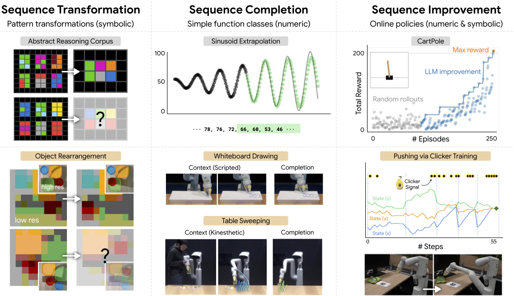

Large Language Models as General Pattern Machines

Abstract
We observe that pre-trained large language models (LLMs) are capable of autoregressively completing complex token sequences -- from arbitrary ones procedurally generated by probabilistic context-free grammars (PCFG), to more rich spatial patterns found in the Abstraction and Reasoning Corpus (ARC), a general AI benchmark, prompted in the style of ASCII art. Surprisingly, pattern completion proficiency can be partially retained even when the sequences are expressed using tokens randomly sampled from the vocabulary. These results suggest that without any additional training, LLMs can serve as general sequence modelers, driven by in-context learning. In this work, we investigate how these zero-shot capabilities may be applied to problems in robotics -- from extrapolating sequences of numbers that represent states over time to complete simple motions, to least-to-most prompting of reward-conditioned trajectories that can discover and represent closed-loop policies (e.g., a stabilizing controller for CartPole). While difficult to deploy today for real systems due to latency, context size limitations, and compute costs, the approach of using LLMs to drive low-level control may provide an exciting glimpse into how the patterns among words could be transferred to actions.

Supplementary Videos
Table Sweeping
In the videos below, we show qualitative examples of text-davinci-003 completing a table sweeping motion given by a human demonstration.
Loop Drawing
In the videos below, we show qualitative examples of text-davinci-003 completing a loop pattern given by a scripted demonstration. Videos are at 4x speed.
Clicker Training
In the videos below, we show an example of how human-in-the-loop clicker training may be used to to teach an object pushing task. Videos are at 4x speed.
Stabilizing CartPole
In the video below, we show an example run of using an LLM to iteratively improve sequences in order to discover a stabilizing controller for CartPole.
Citation
Acknowledgements
We would like to acknowledge Jie Tan, Peng Xu, Carolina Parada, Alexander Herzog, Jensen Gao, Joey Hejna, Megha Srivastava, and Allen Ren for valuable feedback and discussions. The website template is from Robots that Ask for Help.